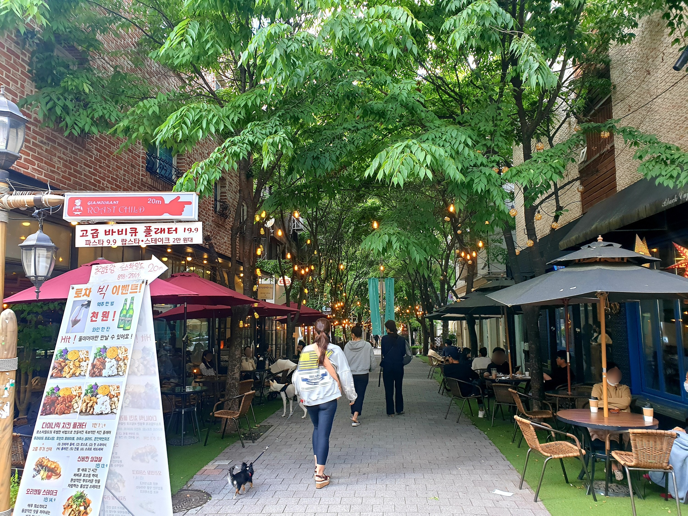
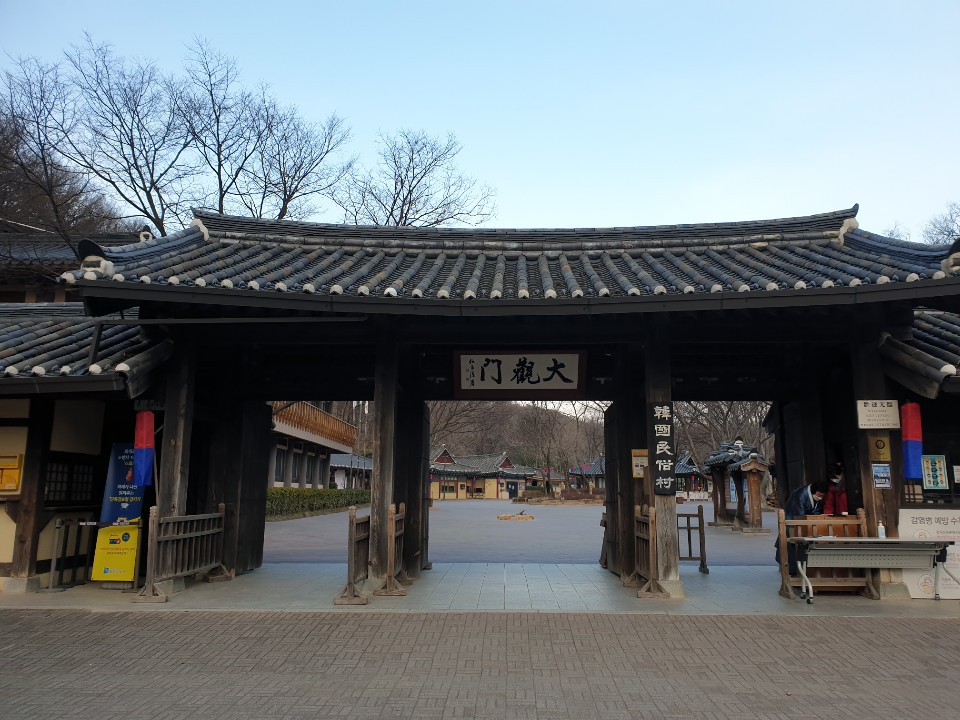
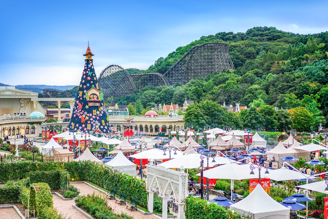

보정동 카페거리
2008~9년경부터 본격적으로 카페가 들어서며 2014년 문화의 거리로 지정되었다.
카페 외에도 레스토랑이나 술집,옷가게 등이 밀집되어있다.
신세계백화점,이마트,단국대학교 등과 연결되어 용인시에서 가장 번화한 상권 중 하나이다.

한국민속촌
1974년 개장하여 한국의 전통문화를 재현하고 있는 곳이다.
시간대별로 말타기,마당놀이 등 공연이 열린다.
놀이마을에는 다른 놀이공원과 같은 놀이기구를 즐길 수 있다.

에버랜드 리조트
테마파크인 에버랜드,워터파크인 캐리비안 베이 뿐만 아니라 숙박시설,서킷,골프장까지
포함하는 리조트이다. 인지도가 높기때문에 전국에서 놀러오는 경우가 많다.
